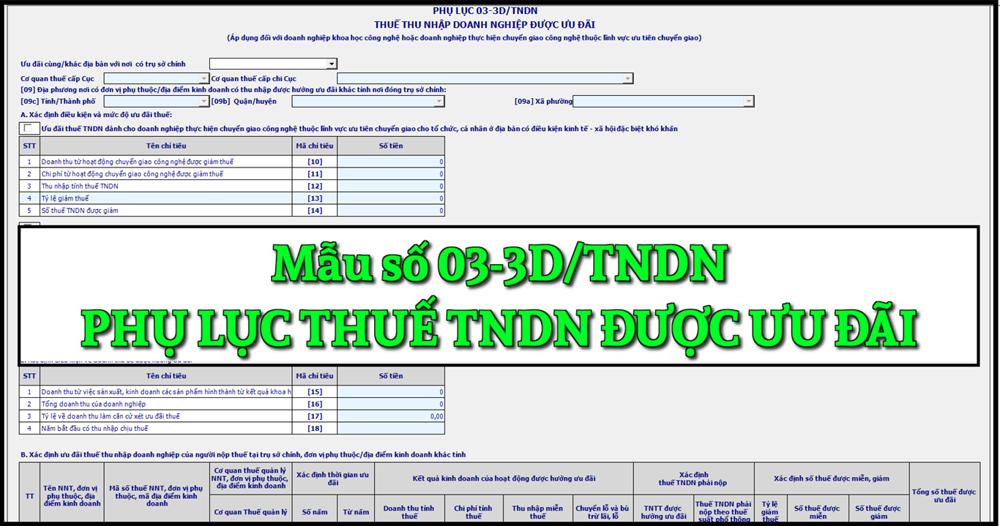

Mẫu Phụ lục thuế thu nhập doanh nghiệp được ưu đãi áp dụng đối với doanh nghiệp khoa học công nghệ hoặc doanh nghiệp thực hiện chuyển giao công nghệ thuộc lĩnh vực ưu tiên chuyển giao mới nhất năm 2024 là mẫu số: 03-3D/TNDN được ban hành kèm theo Thông tư số 80/2021/TT-BTC. Đây là mẫu phụ lục được Kê khai theo từng tỉnh nơi người nộp thuế có trụ sở chính, đơn vị phụ thuộc/địa điểm kinh doanh khác tỉnh có thu nhập được hưởng ưu đãi đồng thời nộp Phụ lục này kèm tờ khai quyết toán thuế thu nhập doanh nghiệp số 03/TNDN tại trụ sở chính
|
Phụ lục
THUẾ THU NHẬP DOANH NGHIỆP ĐƯỢC ƯU ĐÃI (Áp dụng đối với doanh nghiệp khoa học công nghệ hoặc doanh nghiệp thực hiện chuyển giao công nghệ thuộc lĩnh vực ưu tiên chuyển giao) (Kê khai theo từng tỉnh nơi người nộp thuế có trụ sở chính, đơn vị phụ thuộc/địa điểm kinh doanh khác tỉnh có thu nhập được hưởng ưu đãi đồng thời nộp Phụ lục này kèm tờ khai quyết toán thuế thu nhập doanh nghiệp số 03/TNDN tại trụ sở chính ) [01] Kỳ tính thuế:....... Từ ....../ ....../ ...... đến ....../ ....../ ...... [02] Lần đầu [03] Bổ sung lần thứ:…
[04] Tên người nộp thuế: ..................................................................................
[05] Mã số thuế:
[06] Tên đại lý thuế (nếu có):..............................................................................
[07] Mã số thuế: [08] Hợp đồng đại lý thuế: Số...........................ngày........................................... [09] Địa phương nơi có đơn vị phụ thuộc/địa điểm kinh doanh có thu nhập được hưởng ưu đãi khác tỉnh nơi đóng trụ sở chính: [09a] Phường/xã .............. [09b] Quận/huyện...............[09c] Tỉnh/Thành phố.............. A. Xác định điều kiện và mức độ ưu đãi thuế: Ưu đãi thuế TNDN dành cho doanh nghiệp thực hiện chuyển giao công nghệ thuộc lĩnh vực ưu tiên chuyển giao cho tổ chức, cá nhân ở địa bàn có điều kiện kinh tế - xã hội đặc biệt khó khăn
Đơn vị tiền: Đồng Việt Nam
Ưu đãi thuế TNDN dành cho doanh nghiệp khoa học công nghệ 1. Số Giấy chứng nhận doanh nghiệp khoa học và công nghệ: ........ ngày cấp: ......., nơi cấp:.......... Danh mục công nghệ, sản phẩm do doanh nghiệp sản xuất đủ điều kiện được hưởng ưu đãi: 1).............................................................................................................................. 2).............................................................................................................................. 2. Xác định điều kiện về doanh thu để được hưởng ưu đãi
Đơn vị tiền: Đồng Việt Nam
Đơn vị tiền: Đồng Việt Nam
C. Xác định số thuế TNDN phải nộp của hoạt động được hưởng ưu đãi thuế TNDN của đơn vị phụ thuộc/địa điểm kinh doanh khác tỉnh
Tôi cam đoan số liệu, tài liệu khai trên là đúng và chịu trách nhiệm trước pháp luật về những số liệu, tài liệu đã khai./.
|
|||||||||||||||||||||||||||||||||||||||||||||||||||||||||||||||||||||||||||||||||||||||||||||||||||||||||||||||||||||||||||||||||||||||||||||||||||||||||||||||||||||||||||||||||||||||||
Cách kê khai Phụ lục thuế thu nhập doanh nghiệp được ưu đãi - mẫu số 03-3D/TNDN theo TT 80/2021 như sau:
Chỉ tiêu [01]: Ghi rõ kỳ tính thuế năm phù hợp kỳ tính thuế trên tờ khai 03/TNDN
- Trường hợp NNT kê khai riêng Phụ lục thuế thu nhập doanh nghiệp được ưu đãi mẫu 03-3A/TNDN tại cơ quan thuế nơi NNT có đơn vị phụ thuộc, địa điểm kinh doanh khác tỉnh có thu nhập được hưởng ưu đãi thuế TNDN, NNT ghi rõ kỳ tính thuế năm (theo năm dương lịch hoặc năm tài chính đối với doanh nghiệp áp dụng năm tài chính khác với năm dương lịch), từ ngày đầu tiên của năm dương lịch/năm tài chính hoặc ngày bắt đầu hoạt động kinh doanh (đối với doanh nghiệp mới thành lập) hoặc ngày hợp đồng bắt đầu có hiệu lực (đối với hợp đồng) đến ngày kết thúc năm dương lịch/năm tài chính hoặc ngày chấm dứt hoạt động kinh doanh hoặc chấm dứt hợp đồng hoặc chuyển đổi hình thức sở hữu doanh nghiệp hoặc tổ chức lại doanh nghiệp được xác định phù hợp với kỳ kế toán theo quy định của pháp luật về kế toán.
Chỉ tiêu [02], [03]: Tích chọn “Lần đầu”. Trường hợp người nộp thuế phát hiện hồ sơ khai thuế lần đầu đã nộp cho cơ quan thuế có sai, sót thì kê khai bổ sung theo số thứ tự của từng lần bổ sung.
- NNT khai thuế điện tử và nộp phụ lục kèm theo tờ khai tại cơ quan thuế quản lý trực tiếp thì hệ thống Etax tự động hỗ trợ hiển thị thông tin này từ thông tin NNT kê khai trên tờ khai 03/TNDN.
Chỉ tiêu [04], [05]: NNT ghi tên và mã số thuế của người nộp thuế phù hợp thông tin trên tờ khai 03/TNDN.
- NNT khai thuế điện tử và nộp phụ lục kèm theo tờ khai tại cơ quan thuế quản lý trực tiếp thì hệ thống Etax tự động hỗ trợ hiển thị thông tin này từ thông tin NNT kê khai trên tờ khai 03/TNDN.
Chỉ tiêu [06], [07], [08]: NNT ghi tên đại lý thuế, mã số thuế đại lý thuế, thông tin hợp đồng đại lý thuế trong trường hợp NNT khai thuế qua đại lý thuế. Đại lý thuế phải có tình trạng đăng ký thuế “Đang hoạt động” và Hợp đồng phải đang còn hiệu lực tương ứng tại thời điểm khai thuế.
Chỉ tiêu [09a], [09b], [09c]: NNT kê khai thông tin của đơn vị phụ thuộc, địa điểm kinh doanh khác tỉnh có thu nhập được hưởng ưu đãi theo quy định tại điểm h khoản 1 Điều 11 Nghị định số 126/2020/NĐ-CP ngày 19/10/2020 của Chính phủ. Trường hợp có nhiều đơn vị phụ thuộc, địa điểm kinh doanh đóng trên nhiều địa bàn cấp huyện do Cục Thuế quản lý thì chọn 1 đơn vị đại diện để kê khai vào chỉ tiêu này.
- Trường hợp có nhiều đơn vị phụ thuộc, địa điểm kinh doanh do Chi cục Thuế khu vực quản lý thì chọn 1 đơn vị đại diện cho địa bàn cấp huyện do Chi cục Thuế khu vực quản lý để kê khai vào chỉ tiêu này. NNT bỏ trống chỉ tiêu này nếu Phụ lục kê khai thông tin ưu đãi cùng tỉnh với nơi có trụ sở chính.
Phần A. Xác định điều kiện và mức độ ưu đãi thuế
NNT lựa chọn điều kiện ưu đãi là Ưu đãi thuế TNDN dành cho doanh nghiệp thực hiện chuyển giao công nghệ thuộc lĩnh vực ưu tiên chuyển giao cho tổ chức, cá nhân ở địa bàn có điều kiện kinh tế - xã hội đặc biệt khó khăn hoặc Ưu đãi thuế TNDN dành cho doanh nghiệp khoa học công nghệ.
Trường hợp lựa chọn Ưu đãi thuế TNDN dành cho doanh nghiệp thực hiện chuyển giao công nghệ thuộc lĩnh vực ưu tiên chuyển giao cho tổ chức, cá nhân ở địa bàn có điều kiện kinh tế - xã hội đặc biệt khó khăn, NNT kê khai các chỉ tiêu:
Chỉ tiêu [10]: NNT kê khai doanh thu từ hoạt động chuyển giao công nghệ được giảm thuế
Chỉ tiêu [11]: NNT kê khai chi phí từ hoạt động chuyển giao công nghệ được giảm thuế
Chỉ tiêu [12]: NNT kê khai thu nhập tính thuế TNDN. Chỉ tiêu [12] = [10] - [11]
Chỉ tiêu [13]: NNT kê khai tỷ lệ giảm thuế (%)
Chỉ tiêu [14]: NNT kê khai số thuế TNDN được giảm. Chỉ tiêu [14]=[12] x 20% x [13]. Chỉ tiêu [14] được tổng hợp lên chỉ tiêu [C13] của tờ khai 03/TNDN
Trường hợp lựa chọn Ưu đãi thuế TNDN dành cho doanh nghiệp khoa học công nghệ, NNT kê khai các chỉ tiêu:
- Số Giấy chứng nhận doanh nghiệp khoa học và công nghệ, ngày cấp, nơi cấp; Danh mục công nghệ, sản phẩm do doanh nghiệp sản xuất đủ điều kiện được hưởng ưu đãi
- Xác định điều kiện về doanh thu để được hưởng ưu đãi: NNT kê khai đầy đủ thông tin các chỉ tiêu [15], [16], [17], [18].
Phần B. Xác định ưu đãi thuế thu nhập doanh nghiệp của người nộp thuế tại trụ sở chính, đơn vị phụ thuộc/địa điểm kinh doanh: NNT kê khai theo từng trường hợp được hưởng ưu đãi thuế TNDN bao gồm ưu đãi thuế TNDN của NNT tại trụ sở chính/đơn vị phụ thuộc/địa điểm kinh doanh cùng tỉnh với trụ sở chính, và ưu đãi thuế TNDN của đơn vị phụ thuộc/địa điểm kinh doanh khác tỉnh
Cột (1): NNT ghi thứ tự thông tin theo từng dự án đầu tư thuộc trường hợp được hưởng ưu đãi thuế TNDN
Cột (2), (3): NNT ghi tên, MST của NNT (trụ sở chính)/đơn vị phụ thuộc/địa điểm kinh doanh có dự án đầu tư được hưởng ưu đãi thuế TNDN
Cột (4): NNT ghi tên cơ quan thuế quản lý NNT (trụ sở chính)/đơn vị phụ thuộc/địa điểm kinh doanh có dự án đầu tư được hưởng ưu đãi thuế TNDN
Cột (5), (6): NNT kê khai thời gian được ưu đãi, trong đó: kê khai số năm được hưởng ưu đãi thuế suất (cột 5), năm bắt đầu hưởng ưu đãi thuế suất (cột 6) theo pháp luật thuế TNDN.
Cột (7), (8), (9), (10): NNT kê khai kết quả kinh doanh của hoạt động được hưởng ưu đãi thuế, chi tiết chỉ tiêu về doanh thu tính thuế (cột 7), chi phí tính thuế (cột 8), thu nhập miễn thuế (cột 9), chuyển lỗ và bù trừ lãi lỗ (cột 10)
Cột (11): NNT kê khai thu nhập tính thuế được hưởng ưu đãi thuế TNDN. Chỉ tiêu tại cột (11) = (7) - (8) - (9) - (10)
Cột (12): NNT kê khai số thuế TNDN phải nộp theo thuế suất phổ thông. Chỉ tiêu cột (12) = cột (11) x 20%. Tổng cộng cột (12) = chỉ tiêu [19]
Cột (13): NNT kê khai tỷ lệ giảm thuế, cụ thể ghi tỷ lệ 100% nếu đang áp dụng ưu đãi miễn thuế, ghi tỷ lệ 50% đối với nếu đang áp dụng ưu đãi giảm thuế.
Cột (14): NNT kê khai số thuế TNDN được miễn thuế. Tổng cộng cột (14) = chỉ tiêu [20] được tổng hợp lên chỉ tiêu [C12] của tờ khai 03/TNDN
Cột (15): NNT kê khai số thuế TNDN được giảm thuế. Tổng cộng cột (15) = chỉ tiêu [21] được tổng hợp lên chỉ tiêu [C13] của tờ khai 03/TNDN
Phần C. Xác định số thuế TNDN phải nộp của hoạt động được hưởng ưu đãi thuế TNDN của đơn vị phụ thuộc/địa điểm kinh doanh khác tỉnh. NNT không phải kê khai mục C nếu hoạt động được hưởng ưu đãi thuế TNDN cùng tỉnh với nơi có trụ sở chính.
Chỉ tiêu [23]: NNT kê khai số thuế TNDN phải nộp của hoạt động được hưởng ưu đãi thuế TNDN theo công thức [23]=[19] - [22]
Chỉ tiêu [24]: NNT kê khai số thuế TNDN của hoạt động sản xuất kinh doanh nộp thừa trong kỳ trước do NNT thực hiện tạm nộp theo quý lớn hơn số thuế phải nộp theo quyết toán năm tại cơ quan thuế mà NNT thực hiện kê khai riêng hoạt động ưu đãi, chuyển sang bù trừ với số thuế TNDN phải nộp kỳ này.
Chỉ tiêu [25]: NNT kê khai số thuế TNDN đã tạm nộp theo quý trong năm tại tại cơ quan thuế mà NNT thực hiện kê khai riêng hoạt động ưu đãi tính đến thời hạn nộp hồ sơ khai quyết toán. Ví dụ: NNT có kỳ tính thuế từ 01/01/2021 đến 31/12/2021 thì số thuế TNDN đã tạm nộp trong năm là số thuế TNDN đã nộp tính đến hết ngày 31/3/2022.
Chỉ tiêu [26]: NNT kê khai chênh lệch giữa số thuế phải nộp và số thuế đã tạm nộp trong năm theo công thức [26]=[23]-[25].
Chỉ tiêu [27]: NNT kê khai số thuế TNDN còn phải nộp sau quyết toán theo công thức [27]=[23]-[24]-[25].
